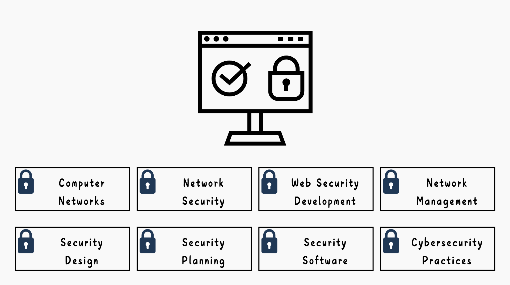

Course Introduction
To align with national policies for cultivating cybersecurity research and talent, starting from the 112th academic year, the Ministry of Education has provided additional cybersecurity slots for universities, encouraging institutions to admit students with expertise in cybersecurity through the application process.
Shih Hsin University’s Department of Information Management offers a series of theoretical and practical courses in information security, including Information Security, Information Security Practices, Web Security Practices, Network Security, and Secure Software Design. The faculty members hold multiple professional certifications in information security and also help students obtain certifications such as the Ministry of Economic Affairs’ Industrial Bureau IPAS certification, Information Security Engineer certificates, and other related international credentials.
Currently, the job market is experiencing a severe shortage of cybersecurity professionals with both expertise and practical skills. Having proficiency in information security guarantees employment opportunities. We welcome high school students interested in cybersecurity to join Shih Hsin University’s Department of Information Management. After receiving professional training, they will have unlimited possibilities in the field of cybersecurity.
Course Structure

Navigator
- Liao Hong-tu:
- Kuo Ming-huang:
- Hu Shuo-cheng:
- Fan Hsiu-wei:
Cybersecurity, Information Management, Digital Transformation, FinTech
Computer Networks, Network Security, Data Mining Case Studies
Computer Networks, Wireless & Sensor Networks, IoT & Blockchain, AI Applications
Network Management, Cybersecurity, Cloud Services